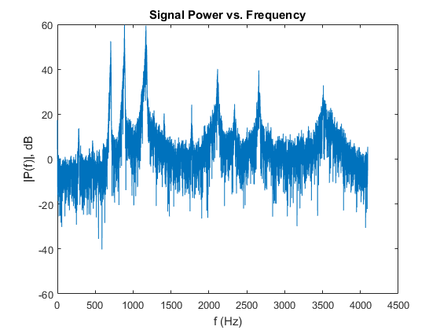

EE 125 Matlab 4 Part 2: Signal Compression
Section 1: FFT Compression Section 2: Storage savings due to compression Section 3: Discrete cosine transform
Contents
FFT Compression
% Step 1 % Loading the train file load train % Listening to the train file % soundsc(y,Fs) % Step 2 % Take the N pt FFT using the next highest power of 2 from length(y) for N n = 2^nextpow2(length(y)); f = Fs*(0:(n/2))/n; Y = fft(y,n); % Convert to decibels P = mag2db(abs(Y)); figure(3) plot(f,P(1:n/2+1)) xlabel('f (Hz)') ylabel('|P(f)|, dB') title('Signal Power vs. Frequency') % The signal has its most powerful components at 750, 900, 1100, 2100, % 2700, and 3500 Hz. If you look at the euler decomposition of the Fourier % transform this means the signal is primarily composed of cosines of those % frequencies % Step 3 % Print the FFTcompression function type('FFTcompression.m') % Step 4 type('SNRoverall.m') % Step 5 % Compress using FFT Y100 = FFTcompression(y,100); Y50 = FFTcompression(y,50); Y20 = FFTcompression(y,20); Y10 = FFTcompression(y,10); % Reconstruct in time domain recon100 = ifft(Y100); recon50 = ifft(Y50); recon20 = ifft(Y20); recon10 = ifft(Y10); % Step 5 a % Listen to the different sounds % soundsc(recon100,Fs) % Sounds like the normal signal % soundsc(recon50,Fs) % Sounds pretty good, but not quite the same % soundsc(recon20,Fs) % Not terribly different from 50% but not amazing % soundsc(recon10,Fs) % Not great quality but definitely still sounds like % a train. % I did some testing in the command window to try to find where I could % stop recognizing the signal and I found that to be at about 0.25 percent % retained, which I found really surprising (I was expecting to not be able % to remove such a high percentage of the original signal), I could even % kind of recognize it at 0.1%. % Step 5 b % Plot the original magnitude spectrum and the 10% spectrum together P10 = mag2db(abs(Y10)); P10(P10<-10^6) = 0; figure(4) plot(f,P(1:n/2+1),'b',f,P10(1:n/2+1),'r') xlabel('f (Hz)') ylabel('|P(f)|, dB') title('Original spectrum and 10% spectrum compared') legend('Original','10%') % The unadulterated signal is much more organic because its composed of a % much larger variety of sinusoids where the 10% sounds fake because it's % made up of less harmonics. % Step 5 c yp = ifft(Y); % Just doing this to preserve the signal length snr100 = SNRoverall(yp,recon100); snr50 = SNRoverall(yp,recon50); snr20 = SNRoverall(yp,recon20); snr10 = SNRoverall(yp,recon10); T = table(snr100,snr50,snr20,snr10) % Step 6 clear [y,Fs] = audioread('onscreen.wav'); % Compress using FFT Y100 = FFTcompression(y,100); Y50 = FFTcompression(y,50); Y20 = FFTcompression(y,20); Y10 = FFTcompression(y,10); % Reconstruct in time domain recon100 = ifft(Y100); recon50 = ifft(Y50); recon20 = ifft(Y20); recon10 = ifft(Y10); % Listening to the outputs % soundsc(recon100,Fs) % Sounds like the normal signal % soundsc(recon50,Fs) % Sounds pretty good, guys voice sounds shallower % soundsc(recon20,Fs) % The guy sounds like he's speaking through an % intercom % soundsc(recon10,Fs) % The guy sounds even more fake, like a textbook % example of a digital recording % This compression works until just about 2 percent when you start to % barely be able to understand what is being said % Plot the original magnitude spectrum and the 10% spectrum together n = 2^nextpow2(length(y)); f = Fs*(0:(n/2))/n; Y = fft(y,n); P = mag2db(abs(Y)); P10 = mag2db(abs(Y10)); P10(P10<-10^6) = 0; figure(4) plot(f,P(1:n/2+1),'b',f,P10(1:n/2+1),'r') xlabel('f (Hz)') ylabel('|P(f)|, dB') title('Original spectrum and 10% spectrum compared') legend('Original','10%') % Looking at the graph it makes sense why you can still understand what he % is saying even when retaining only 10 percent of the signal power. This % is because you can see the frequency waveforms for the important things % he says like "on screen" and the beep or whatever that is. % Calculating the SNR values yp = ifft(Y); % Just doing this to preserve the signal length snr100 = SNRoverall(yp,recon100); snr50 = SNRoverall(yp,recon50); snr20 = SNRoverall(yp,recon20); snr10 = SNRoverall(yp,recon10); T = table(snr100,snr50,snr20,snr10)
function Yout = FFTcompression(signal,percentRetained)
% function Yout = FFTcompression(signal,percentRetained)
% This function takes in a signal and a percent of the signal to retain,
% computes the fourier transform and removes the undesired components, and
% returns the FFT of only the percent you want to keep.
% If the percent retained is 90, then the top 90% of the signal will be
% kept.
% Take the Fourier transform
n = 2^nextpow2(length(signal));
S = fft(signal,n);
% Zero out the weaker frequency components and return the signal
dummy = sort(abs(S));
index = round((1-percentRetained/100)*length(dummy))+1;
q = dummy(index);
S(abs(S)<=q) = 0;
Yout = S;
return
function snr = SNRoverall(signal,reconSignal)
% function snr = SNRoverall(signal,reconSignal)
% This function computes the overall SNR of a signal
snr = 10*log(sum(signal.^2./(signal-reconSignal).^2));
return
T =
snr100 snr50 snr20 snr10
______ ______ _____ ______
448.61 289.98 300.5 274.96
T =
snr100 snr50 snr20 snr10
______ ______ ______ _____
477.95 239.07 231.94 271.2
 Storage savings due to compression
Step 1 It makes sense that the Fourier transform is doubling storage space of the signal because the FFT returns the information in both the positive and negative frequencies. If I were going to save them, since I know the original signal will always be real valued, I would save only half of the Fourier transform because the negative frequencies are going to be symmetric to the positive frequencies about the y axis. If you look at the length adjusted yp, then the amount of data is going to be the same whether it is stored in the Fourier or time domain (if you take only one half of Fourier data). This would equate to the same amount of memory usage storing data in the time or frequency domain assuming you make the signal to the next power of 2
whos y whos yp whos Y whos Y100 % whos Y50 % whos Y20 whos Y10 % Step 2 Ysp = sparse(Y10); whos Ysp % Oh wow, Y10 is 524288 bytes where Ysp is 78616 bytes. % The space saving here is pretty substantial, but not 10x. This is % probably because the array still needs to save the corresponding % positions for each of the nonzero values from the previous matrix. Instead % of just storing all of the values and keeping the zeros in the places % they were in before you have to store all the position values of the % nonzero values.
Name Size Bytes Class Attributes y 25680x1 205440 double Name Size Bytes Class Attributes yp 32768x1 262144 double Name Size Bytes Class Attributes Y 32768x1 524288 double complex Name Size Bytes Class Attributes Y100 32768x1 524288 double complex Name Size Bytes Class Attributes Y10 32768x1 524288 double complex Name Size Bytes Class Attributes Ysp 32768x1 78616 double sparse, complex
Discrete Cosine Transform
% Step 1 D = zeros(1024,1); D(1) = 1; d = idct(D); figure(5) subplot 311 plot(d) axis([0 1024 -0.05 0.05]) xlabel('sample number') ylabel('d') title('D(1) = 1') D(1) = 0; D(2) = 1; d = idct(D); subplot 312 plot(d) axis([0 1024 -0.05 0.05]) xlabel('sample number') ylabel('d') title('D(2) = 1') D(2) = 0; D(3) = 1; d = idct(D); subplot 313 plot(d) axis([0 1024 -0.05 0.05]) xlabel('sample number') ylabel('d') title('D(3) = 1') suptitle('Varying which position is nonzero, in DCT domain') % What this step is doing is varying which composite harmonics are being % represented in the signal. The discrete cosine transformation represents % a time domain signal as a composite superposition of a bunch of different % cosine functions. When you set D(1) = 1 you're setting the magnitude for % what is the DC component of the signal. When you set D(2) = 1 you're % looking at only the first harmonic (lowest nonzero frequency), and when % you set D(3) = 1 you're looking at the next harmonic. The results make % sense since the first plot is just a DC shift, the second plot is a % cosine, and the third plot is a higher frequency cosine. % Step 2 type('DCTcompression.m') D100 = DCTcompression(y,100); D50 = DCTcompression(y,50); D20 = DCTcompression(y,20); D10 = DCTcompression(y,10); dctRecon100 = idct(D100); dctRecon50 = idct(D50); dctRecon20 = idct(D20); dctRecon10 = idct(D10); dctSnr100 = SNRoverall(yp,dctRecon100); dctSnr50 = SNRoverall(yp,dctRecon50); dctSnr20 = SNRoverall(yp,dctRecon20); dctSnr10 = SNRoverall(yp,dctRecon10); % DCT SNR table dctT = table(dctSnr100,dctSnr50,dctSnr20,dctSnr10) % Listening to the differences between FFT, DCT compressions, 20% retained % soundsc(recon20,Fs) % soundsc(dctRecon20,Fs) % Oh wow, I actually found there to be a kind of significant difference in % the amount of noise you hear in the reconstructed signal. The DCT was % much cleaner.
function Dout = DCTcompression(signal,percentRetained)
% function Dout = DCTcompression(signal,percentRetained)
% This function takes in a time domain signal, performs a DCT, retaining
% only a desired percentage of the signal strength.
% Take the n point DCT of the function (making sure it's an even power of
% 2)
n = 2^nextpow2(length(signal));
D = dct(signal,n);
% Find where you want to start zeroing out data
dummy = sort(abs(D));
index = round((1-percentRetained/100)*length(dummy)) + 1;
% Zero out the desired data points
Dout = D;
Dout(abs(Dout)<dummy(index)) = 0;
return
dctT =
dctSnr100 dctSnr50 dctSnr20 dctSnr10
_________ ________ ________ ________
NaN 298.61 278.77 210.38